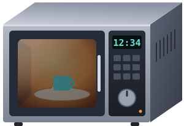

Screen saver settings
Version 0.2.0
License MIT. Third-party licenses are listed in THIRD-PARTY-LICENSES.txt.
Inspired by the classic flying-appliance screen savers. This is an independent work, not affiliated with or endorsed by their creators or rights holders.